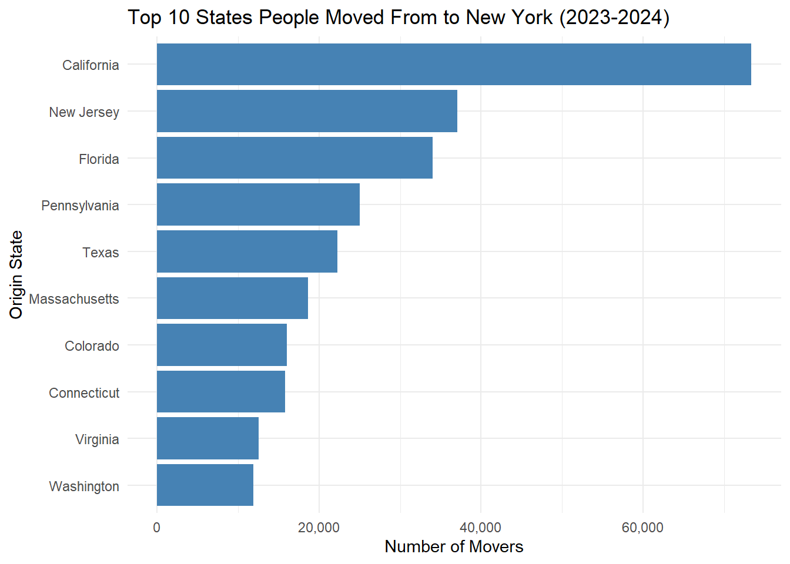
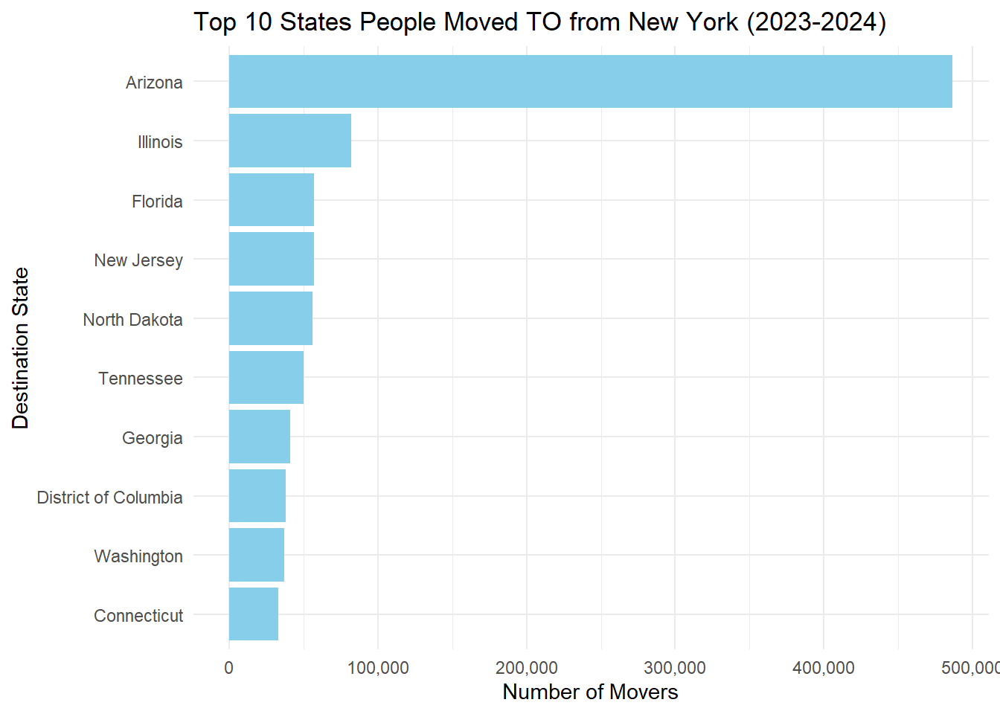
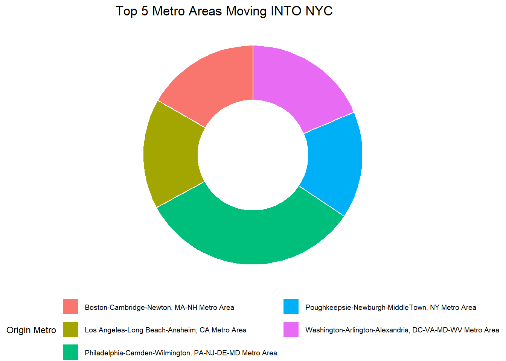
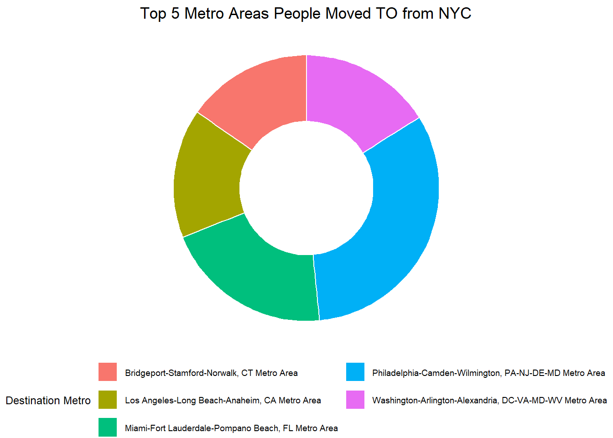
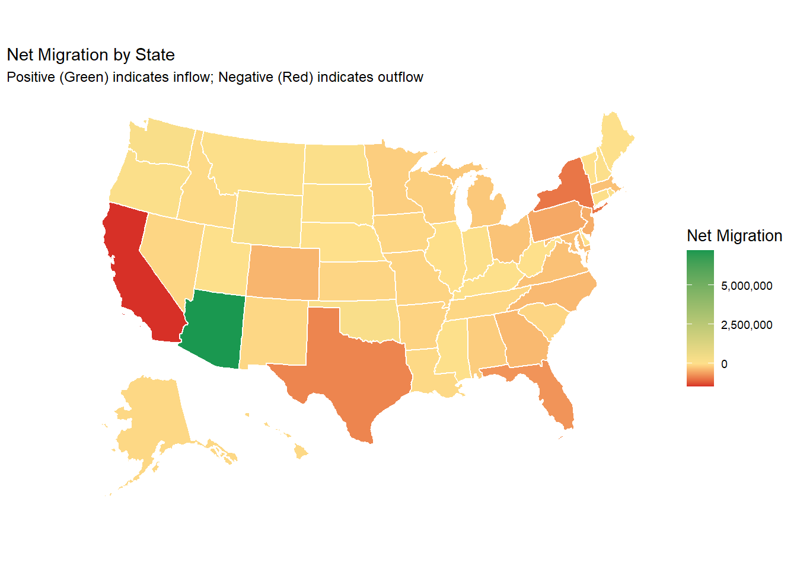
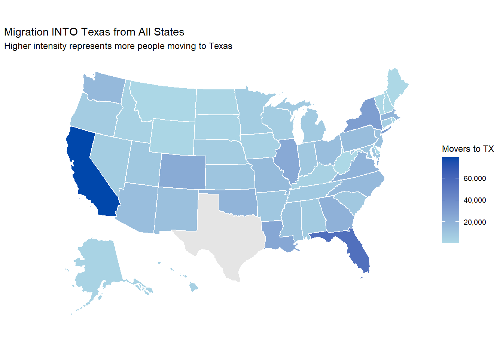

Warning: package 'tidycensus' was built under R version 4.5.3
library(tidyverse)
Warning: package 'tidyverse' was built under R version 4.5.3
Warning: package 'readr' was built under R version 4.5.3
Warning: package 'dplyr' was built under R version 4.5.3
Warning: package 'stringr' was built under R version 4.5.3
── Attaching core tidyverse packages ──────────────────────── tidyverse 2.0.0 ──
✔ dplyr 1.2.1 ✔ readr 2.2.0
✔ forcats 1.0.1 ✔ stringr 1.6.0
✔ ggplot2 4.0.0 ✔ tibble 3.3.0
✔ lubridate 1.9.4 ✔ tidyr 1.3.1
✔ purrr 1.2.1
── Conflicts ────────────────────────────────────────── tidyverse_conflicts() ──
✖ dplyr::filter() masks stats::filter()
✖ dplyr::lag() masks stats::lag()
ℹ Use the conflicted package (<http://conflicted.r-lib.org/>) to force all conflicts to become errors
library(sf)
Warning: package 'sf' was built under R version 4.5.3
Linking to GEOS 3.14.1, GDAL 3.12.1, PROJ 9.7.1; sf_use_s2() is TRUE
# 1. Ensure the data directory exists for cachingif (!dir.exists("data")) {dir.create("data")}# 2. Define the years, skipping 2020 as requestedyears <-c(2015:2019, 2021:2024)# 3. Retrieve ACS data# We set tigris_use_cache to TRUE to handle shapefile cachingoptions(tigris_use_cache =TRUE)pop_data_list <-map(years, ~ {message(paste("Downloading data for year:", .x))get_acs(geography ="state",variables =c(total_population ="B01003_001"),year = .x,survey ="acs1",geometry =TRUE, # Downloads shapefilescache_table =TRUE# Caches variable metadata )})
Downloading data for year: 2015
Getting data from the 2015 1-year ACS
The 1-year ACS provides data for geographies with populations of 65,000 and greater.
Warning: • You have not set a Census API key. Users without a key are limited to 500
queries per day and may experience performance limitations.
ℹ For best results, get a Census API key at
http://api.census.gov/data/key_signup.html and then supply the key to the
`census_api_key()` function to use it throughout your tidycensus session.
This warning is displayed once per session.
Downloading data for year: 2016
Getting data from the 2016 1-year ACS
The 1-year ACS provides data for geographies with populations of 65,000 and greater.
Downloading data for year: 2017
Getting data from the 2017 1-year ACS
The 1-year ACS provides data for geographies with populations of 65,000 and greater.
Downloading data for year: 2018
Getting data from the 2018 1-year ACS
The 1-year ACS provides data for geographies with populations of 65,000 and greater.
Downloading data for year: 2019
Getting data from the 2019 1-year ACS
The 1-year ACS provides data for geographies with populations of 65,000 and greater.
Downloading data for year: 2021
Getting data from the 2021 1-year ACS
The 1-year ACS provides data for geographies with populations of 65,000 and greater.
Downloading data for year: 2022
Getting data from the 2022 1-year ACS
The 1-year ACS provides data for geographies with populations of 65,000 and greater.
Downloading data for year: 2023
Getting data from the 2023 1-year ACS
The 1-year ACS provides data for geographies with populations of 65,000 and greater.
Downloading data for year: 2024
Getting data from the 2024 1-year ACS
The 1-year ACS provides data for geographies with populations of 65,000 and greater.
# 4. Combine into a tidy sf data frame# We name the list elements by year, then bind them into one tablefinal_pop_df <- pop_data_list %>%set_names(years) %>%map_dfr(~.x, .id ="year") %>%mutate(year =as.numeric(year)) %>%rename(state = NAME, total_population = estimate) %>%select(GEOID, state, year, total_population, geometry)# 5. Save the processed data to your data directory to avoid re-downloadingsaveRDS(final_pop_df, "data/state_population_2015_2024.rds")# Check the resultglimpse(final_pop_df)
Warning: There was 1 warning in `mutate()`.
ℹ In argument: `population = clean_census_number(population)`.
Caused by warning:
! 53 parsing failures.
row col expected actual
1 -- a number Estimate
2 -- a number X
57 -- a number X
112 -- a number X
167 -- a number X
... ... ........ ........
See problems(...) for more details.
Warning: There was 1 warning in `mutate()`.
ℹ In argument: `stayed_1 = clean_census_number(stayed_1)`.
Caused by warning:
! 1 parsing failure.
row col expected actual
1 -- a number Estimate
Warning: There were 2 warnings in `mutate()`.
The first warning was:
ℹ In argument: `population = clean_census_number_2023(stayed_1) +
clean_census_number_2023(stayed_2)`.
Caused by warning:
! 1 parsing failure.
row col expected actual
1 -- a number MOE (±)
ℹ Run `dplyr::last_dplyr_warnings()` to see the 1 remaining warning.
Warning: There was 1 warning in `mutate()`.
ℹ In argument: `population = clean_census_number_2023(population)`.
Caused by warning:
! 98 parsing failures.
row col expected actual
1 -- a number Estimate
2 -- a number Estimate
3 -- a number Estimate
4 -- a number Estimate
5 -- a number Estimate
... ... ........ ........
See problems(...) for more details.
summary(migration_data_2023$population)
Min. 1st Qu. Median Mean 3rd Qu. Max.
0 267 1025 30891 3475 30256328
#ACTIVITY 4# --- Task 4: Combined Function (Filtered) ---state_to_state_migration <-function() {# 1. Fetch data from your two existing functions df_2024 <-state_to_state_migration_2024() df_2023 <-state_to_state_migration_2023()# 2. Combine and filter to keep only official states official_states <-c(state.name, "District of Columbia") combined_data <-bind_rows(df_2024, df_2023) %>%# Keep only records where BOTH origin and destination are in your official listfilter(state_current %in% official_states, state_1y %in% official_states) %>%# Select only the columns needed for analysisselect(state_current, state_1y, population, year_current, year_1y)return(combined_data)}# --- Execution ---full_migration_data <-state_to_state_migration()
Warning: There was 1 warning in `mutate()`.
ℹ In argument: `population = clean_census_number(population)`.
Caused by warning:
! 53 parsing failures.
row col expected actual
1 -- a number Estimate
2 -- a number X
57 -- a number X
112 -- a number X
167 -- a number X
... ... ........ ........
See problems(...) for more details.
Warning: There was 1 warning in `mutate()`.
ℹ In argument: `stayed_1 = clean_census_number(stayed_1)`.
Caused by warning:
! 1 parsing failure.
row col expected actual
1 -- a number Estimate
Warning: There were 2 warnings in `mutate()`.
The first warning was:
ℹ In argument: `population = clean_census_number_2023(stayed_1) +
clean_census_number_2023(stayed_2)`.
Caused by warning:
! 1 parsing failure.
row col expected actual
1 -- a number MOE (±)
ℹ Run `dplyr::last_dplyr_warnings()` to see the 1 remaining warning.
Warning: There was 1 warning in `mutate()`.
ℹ In argument: `population = clean_census_number_2023(population)`.
Caused by warning:
! 98 parsing failures.
row col expected actual
1 -- a number Estimate
2 -- a number Estimate
3 -- a number Estimate
4 -- a number Estimate
5 -- a number Estimate
... ... ........ ........
See problems(...) for more details.
# --- Verification ---# This will now return 51print(paste("Unique states in current:", n_distinct(full_migration_data$state_current)))
[1] "Unique states in current: 51"
print(paste("Unique states in 1y:", n_distinct(full_migration_data$state_1y)))
[1] "Unique states in 1y: 51"
# This should show exactly 5,100 rows (51 states * 50 destinations * 2 years)glimpse(full_migration_data)
#ACTIVITY 5metro_to_metro_migration <-function() { data_dir <-"data/mp03"if (!dir.exists(data_dir)) dir.create(data_dir, recursive =TRUE) api_url <-"https://api.census.gov/data/2020/acs/flows?get=MOVEDIN,MOVEDOUT,FULL1_NAME,FULL2_NAME&for=metropolitan%20statistical%20area/micropolitan%20statistical%20area:*" dest_file <-file.path(data_dir, "metro-to-metro-migration.json")if (!file.exists(dest_file)) {message("Fetching Metro Data from Census API...")# Ensure you have library(httr2) loaded httr2::request(api_url) |> httr2::req_perform() |> httr2::resp_body_string() |>writeLines(dest_file) }# FIX: Replace read_json with fromJSON raw_json <- jsonlite::fromJSON(dest_file, simplifyVector =TRUE)# Convert matrix to data frame and set headers from the first row metro_raw <-as.data.frame(raw_json[-1, ], stringsAsFactors =FALSE)colnames(metro_raw) <- raw_json[1, ]# Tidy the Data metro_clean <- metro_raw |>as_tibble() |>rename(metro_current = FULL1_NAME,metro_1y = FULL2_NAME,moved_in = MOVEDIN,moved_out = MOVEDOUT) |>mutate(across(c(moved_in, moved_out), as.integer)) |>select(metro_current, metro_1y, moved_in, moved_out) |>filter(!is.na(metro_current), !is.na(metro_1y))return(metro_clean)}metro_migration <-metro_to_metro_migration()metro_migration <- metro_migration |>filter(str_detect(metro_1y, "Metro Area$|Micro Area$")) |>filter(!str_detect(metro_1y, "Outside Metro Area"))
# JUST LOAD THE LIBRARIES - DO NOT INSTALL THEM HERElibrary(dplyr)library(knitr)library(kableExtra)
Warning: package 'kableExtra' was built under R version 4.5.3
Attaching package: 'kableExtra'
The following object is masked from 'package:dplyr':
group_rows
library(scales)
Attaching package: 'scales'
The following object is masked from 'package:purrr':
discard
The following object is masked from 'package:readr':
col_factor
library(usmap)
Warning: package 'usmap' was built under R version 4.5.3
library(ggplot2)library(jsonlite)
Warning: package 'jsonlite' was built under R version 4.5.3
Attaching package: 'jsonlite'
The following object is masked from 'package:purrr':
flatten
library(httr2)library(stringr)
#ACTIVITY 6 - QUESTION 1#Which states have had the highest net population growth rates over the past decade?install.packages("kableExtra")
Warning: package 'kableExtra' is in use and will not be installed
library(dplyr)library(tidyr)library(sf)library(scales)library(knitr)library(kableExtra) # Essential for borders and titles# 1. Prepare and format the dataformatted_table <- final_pop_df %>%st_drop_geometry() %>%filter(year %in%c(2015, 2024)) %>%select(state, year, total_population) %>%pivot_wider(names_from = year, values_from = total_population) %>%mutate(# Store raw numbers for sorting, but format for displayraw_delta = (`2024`-`2015`) /`2015`,delta_pct =paste0(round(raw_delta *100, 2), "%"),`2015`=comma(`2015`),`2024`=comma(`2024`) ) %>%arrange(desc(raw_delta)) %>%select(state, `2015`, `2024`, `Delta`= delta_pct)# 2. Render the formatted tableformatted_table %>%kable(caption ="Fastest Growing States for 2015 to 2024", align ="c") %>%kable_styling(bootstrap_options =c("striped", "hover", "bordered"), full_width = F)
Fastest Growing States for 2015 to 2024
state
2015
2024
Delta
Idaho
1,654,930
2,001,619
20.95%
Utah
2,995,919
3,503,613
16.95%
Florida
20,271,272
23,372,215
15.3%
Texas
27,469,114
31,290,831
13.91%
Nevada
2,890,845
3,267,467
13.03%
South Carolina
4,896,146
5,478,831
11.9%
Delaware
945,934
1,051,917
11.2%
Arizona
6,828,065
7,582,384
11.05%
Washington
7,170,351
7,958,180
10.99%
Montana
1,032,949
1,137,233
10.1%
North Carolina
10,042,802
11,046,024
9.99%
Tennessee
6,600,299
7,227,750
9.51%
Georgia
10,214,860
11,180,878
9.46%
Colorado
5,456,574
5,957,494
9.18%
South Dakota
858,469
924,669
7.71%
Alabama
4,858,979
5,157,699
6.15%
New Jersey
8,958,013
9,500,851
6.06%
Oregon
4,028,977
4,272,371
6.04%
New Hampshire
1,330,608
1,409,032
5.89%
Nebraska
1,896,190
2,005,466
5.76%
Maine
1,329,328
1,405,012
5.69%
Minnesota
5,489,594
5,793,151
5.53%
Rhode Island
1,056,298
1,112,308
5.3%
North Dakota
756,928
796,568
5.24%
Virginia
8,382,993
8,811,195
5.11%
Massachusetts
6,794,422
7,136,171
5.03%
Oklahoma
3,911,338
4,095,393
4.71%
Indiana
6,619,680
6,924,275
4.6%
District of Columbia
672,228
702,250
4.47%
Maryland
6,006,401
6,263,220
4.28%
Iowa
3,123,899
3,241,488
3.76%
Arkansas
2,978,204
3,088,354
3.7%
Kentucky
4,425,092
4,588,372
3.69%
Vermont
626,042
648,493
3.59%
Wisconsin
5,771,337
5,960,975
3.29%
Missouri
6,083,672
6,245,466
2.66%
Connecticut
3,590,886
3,675,069
2.34%
Ohio
11,613,423
11,883,304
2.32%
Michigan
9,922,576
10,140,459
2.2%
New Mexico
2,085,109
2,130,256
2.17%
Pennsylvania
12,802,503
13,078,751
2.16%
Kansas
2,911,641
2,970,606
2.03%
Hawaii
1,431,603
1,446,146
1.02%
California
39,144,818
39,431,263
0.73%
New York
19,795,791
19,867,248
0.36%
Wyoming
586,107
587,618
0.26%
Alaska
738,432
740,133
0.23%
Illinois
12,859,995
12,710,158
-1.17%
Louisiana
4,670,724
4,597,740
-1.56%
Mississippi
2,992,333
2,943,045
-1.65%
West Virginia
1,844,128
1,769,979
-4.02%
Puerto Rico
3,474,182
3,203,295
-7.8%
WRITE UP
Idaho, Utah Florida and Texas had the highest net population growth rates over the past decade. This could be due to the affordability and quality of life that the states have to offer. The cost of living is comparably lower to other states, and the states are also known for the outdoor activities. Outdoor activities have likely become more important due to hybrid and remote work, which has freed up leisure time versus pre-pandemic.
#ACTIVITY 6 - QUESTION 2#If you meet someone who moved to New York State in the last year, what are the most likely states they moved from? PART 1library(dplyr)library(ggplot2)library(scales)# 1. Filter for people who moved into New York State (Numeric Data Only)ny_inbound_plot_data <- full_migration_data |># Keep only records moving TO New Yorkfilter(state_current =="New York") |># Exclude those who stayed (moved from NY to NY)filter(state_1y !="New York") |># Aggregate by origin stategroup_by(state_1y) |>summarize(total_movers =sum(population, na.rm =TRUE)) |># Sort to find the top sourcesarrange(desc(total_movers)) |>slice_head(n =10)# 2. Render the Bar Chartggplot(ny_inbound_plot_data, aes(x =reorder(state_1y, total_movers), y = total_movers)) +geom_col(fill ="steelblue") +coord_flip() +# Makes the state names readablelabs(title ="Top 10 States People Moved From to New York (2023-2024)",x ="Origin State",y ="Number of Movers" ) +# Add commas to the X-axis (the number axis)scale_y_continuous(labels = comma) +theme_minimal()

WRITE UP
California stands out at the top state people move from to New York. This could be due to many factors including wanting to experience all four seasons given most parts of California are warm and do not get snow. New York also has the best work opportunities within Finance and Law which could be appealing. New York and California are comparable in cost of living, therefore, people in California are some of the few who could move to New York and maintain their lifestyle.
#ACTIVITY 6 - QUESTION 2#If one of your friends announces they are moving out of the state, where are they most likely to move? PART 2library(dplyr)library(ggplot2)library(scales)# 1. Prepare the data (Numeric Only)ny_outbound_plot_data <- full_migration_data |># Keep only records where New York was the origin statefilter(state_1y =="New York") |># Exclude those who stayed (moved from NY to NY)filter(state_current !="New York") |># Aggregate by destination stategroup_by(state_current) |>summarize(total_movers =sum(population, na.rm =TRUE)) |># Sort to find the top destinationsarrange(desc(total_movers)) |>slice_head(n =10)# 2. Render the Bar Chartggplot(ny_outbound_plot_data, aes(x =reorder(state_current, total_movers), y = total_movers)) +geom_col(fill ="skyblue") +# Using a different color for outboundcoord_flip() +# Makes the state names readablelabs(title ="Top 10 States People Moved TO from New York (2023-2024)",x ="Destination State",y ="Number of Movers" ) +# Add commas to the axis numbers automaticallyscale_y_continuous(labels = comma) +theme_minimal()

WRITE UP
Arizona is the clear choice for people to move to from New York. The primary driver of this trend is likely the cost of living and housing affordability. New York is known to have some of the highest housing costs, therefore, people who are looking to have a family, or spend their money in other areas including travel would find Arizona an appealing place to be. In addition, Arizona has nice weather and could be appealing for people who want to experience less cold weather, and more sunshine.
#ACTIVITY 6 - QUESTION 3#If you meet someone who moved to New York City in the last year, what are the most likely metro areas they moved from? PART 1# Load all required librarieslibrary(dplyr)library(ggplot2)library(scales)library(jsonlite)library(httr2)library(stringr)# 3. Process the data for NYCnyc_inbound_plot_data <- metro_migration |>filter(metro_current =="New York-Newark-Jersey City, NY-NJ-PA Metro Area") |>filter(metro_1y != metro_current) |>group_by(metro_1y) |>summarize(total_movers =sum(moved_in, na.rm =TRUE)) |>arrange(desc(total_movers)) |>slice_head(n =5)# 4. Render the Donut Chartggplot(nyc_inbound_plot_data, aes(x =2, y = total_movers, fill = metro_1y)) +geom_col(width =1, color ="white") +coord_polar(theta ="y") +xlim(0.5, 2.5) +theme_void() +theme(legend.position ="bottom",legend.text =element_text(size =7), legend.title =element_text(size =9) ) +labs(title ="Top 5 Metro Areas Moving INTO NYC",fill ="Origin Metro" ) +guides(fill =guide_legend(ncol =2))

WRITE UP
Four of the top five metro areas moving into NY are on the east coast. This trend could be driven by college students who went to school in nearby cities and want to start their careers in NY. Generally speaking, NY offers a more diverse experience versus the other cities - including dining and theater, which could be appealing for people who are looking to have a wide variety of cultural experiences.
#ACTIVITY 6 - QUESTION 3#If one of your friends announces they are moving out of the city, where are they most likely to move? PART 2library(dplyr)library(ggplot2)library(scales)# 1. Process data (Keep total_movers numeric for plotting)nyc_outbound_plot_data <- metro_migration |># Note: Based on your logic, we filter for NYC as the origin (metro_current)filter(metro_current =="New York-Newark-Jersey City, NY-NJ-PA Metro Area") |>filter(metro_1y != metro_current) |>group_by(metro_1y) |>summarize(total_movers =sum(moved_out, na.rm =TRUE)) |>arrange(desc(total_movers)) |>slice_head(n =5)# 2. Render the Donut Chartggplot(nyc_outbound_plot_data, aes(x =2, y = total_movers, fill = metro_1y)) +geom_col(width =1, color ="white") +coord_polar(theta ="y") +xlim(0.5, 2.5) +theme_void() +theme(legend.position ="bottom",legend.text =element_text(size =7), legend.title =element_text(size =9) ) +labs(title ="Top 5 Metro Areas People Moved TO from NYC",fill ="Destination Metro" ) +# Force legend into 2 columns for a compact lookguides(fill =guide_legend(ncol =2))

WRITE UP
Four of the top five metro areas moving into NY are on the east coast. People who are leaving NY for other east coast cities are likely looking for a more affordable option. People who move to Los Angeles are clearly not looking for affordability - and could instead be looking to escape the east coast weather. Likewise, the retired community is likely driving the trend of moving from NY to Miami in search of warmer weather.
#ACTIVITY 6 - QUESTION 4##Which states have had the highest amounts of in-migration and out-migration? Furthermore, which states have had the highest amount of net migration?library(dplyr)library(knitr)library(kableExtra)library(scales)# 1. Calculate In-Migration (State is destination)inbound <- full_migration_data |>filter(state_current != state_1y) |>group_by(state_current) |>summarize(total_in =sum(population, na.rm =TRUE)) |>rename(state = state_current)# 2. Calculate Out-Migration (State is origin)outbound <- full_migration_data |>filter(state_current != state_1y) |>group_by(state_1y) |>summarize(total_out =sum(population, na.rm =TRUE)) |>rename(state = state_1y)# 3. Join them into one summarystate_migration_summary <- inbound |>full_join(outbound, by ="state") |>mutate(total_in =replace_na(total_in, 0),total_out =replace_na(total_out, 0),net_migration = total_in - total_out ) |>arrange(desc(net_migration))# 4. Display the Top 10state_migration_summary |>slice_head(n =10) |>mutate(across(c(total_in, total_out, net_migration), comma)) |>kable(col.names =c("State", "Total In-Migration", "Total Out-Migration", "Net Migration"),caption ="Top 10 States by Net Migration",align ="lrrr" ) |>kable_styling(bootstrap_options =c("striped", "hover", "bordered"), full_width = F)
Top 10 States by Net Migration
State
Total In-Migration
Total Out-Migration
Net Migration
Arizona
7,591,564
356,582
7,234,982
District of Columbia
470,186
174,705
295,481
Wyoming
301,221
63,555
237,666
Washington
813,165
611,415
201,750
Oklahoma
408,998
237,762
171,236
Rhode Island
220,478
93,865
126,613
North Dakota
182,932
59,672
123,260
Oregon
455,662
341,710
113,952
Indiana
440,402
364,370
76,032
Connecticut
337,120
268,261
68,859
WRITE UP
Similar to earlier findings, Arizona is the clear choice for people to move to from other states, including New York. This is likely due to the sunlight and mild winters, where the sun shines in Arizona for about 300 days each year! The climate is also dry which is most often times preferred to humidity. Likewise, the great weather lends itself to year-round outdoor activities including golf, cycling and tennis.
#ACTIVITY 6 - QUESTION 4 - HEAT MAPlibrary(usmap)library(ggplot2)library(scales)library(dplyr)# 1. Prepare your summary data# Note: Ensure the 'state' column contains full state names (e.g., "Texas", "Florida")# as usmap can automatically map these.map_data_full <- state_migration_summary # 2. Render the Mapplot_usmap(data = map_data_full, values ="net_migration", color ="white") +scale_fill_gradientn(colors =c("#D73027", "#FEE08B", "#1A9850"), # Red (Loss) to Yellow (Zero) to Green (Gain)name ="Net Migration",label = scales::comma,# This centers the color scale at zero so neutral states are yellowvalues = scales::rescale(c(min(map_data_full$net_migration, na.rm =TRUE), 0, max(map_data_full$net_migration, na.rm =TRUE))) ) +labs(title ="Net Migration by State",subtitle ="Positive (Green) indicates inflow; Negative (Red) indicates outflow" ) +theme(legend.position ="right",legend.title =element_text(size =10) )

#ACTIVITY 6 - QUESTION 5##Which metro areas have had the highest amounts of total in-migration and out-migration? Furthermore, which metro areas have had the highest amount of net migration?library(dplyr)library(knitr)library(kableExtra)library(scales)# 1. Summarize migration by Metro Areametro_migration_summary <- metro_migration |># Exclude self-loops (moves within the same metro) if they existfilter(metro_current != metro_1y) |>group_by(metro_current) |>summarize(total_in =sum(moved_in, na.rm =TRUE),total_out =sum(moved_out, na.rm =TRUE) ) |>mutate(net_migration = total_in - total_out) |>arrange(desc(net_migration))# 2. Display the top 10 Metro Areas by Net Migrationmetro_migration_summary |>select(metro_current, total_in, total_out, net_migration) |>slice_head(n =10) |>mutate(across(c(total_in, total_out, net_migration), comma)) |>kable(col.names =c("Metro Area", "Total In-Migration", "Total Out-Migration", "Net Migration"),caption ="Top 10 Metro Areas by Net Migration",align ="lrrr" ) |>kable_styling(bootstrap_options =c("striped", "hover", "bordered"), full_width = F)
Top 10 Metro Areas by Net Migration
Metro Area
Total In-Migration
Total Out-Migration
Net Migration
Phoenix-Mesa-Chandler, AZ Metro Area
182,053
126,179
55,874
Riverside-San Bernardino-Ontario, CA Metro Area
178,045
137,731
40,314
Dallas-Fort Worth-Arlington, TX Metro Area
215,511
180,491
35,020
Austin-Round Rock-GeorgeTown, TX Metro Area
116,913
85,901
31,012
Las Vegas-Henderson-Paradise, NV Metro Area
92,544
61,696
30,848
Tampa-St. Petersburg-Clearwater, FL Metro Area
134,637
105,146
29,491
Orlando-Kissimmee-Sanford, FL Metro Area
133,976
105,395
28,581
Jacksonville, FL Metro Area
73,419
54,772
18,647
Deltona-Daytona Beach-Ormond Beach, FL Metro Area
41,276
23,312
17,964
Nashville-Davidson--Murfreesboro--Franklin, TN Metro Area
73,461
55,589
17,872
WRITE UP
Metro areas that have the most in-migration share key similarities. First and foremost, several of the states do not have personal income tax (Florida, Texas and Tennessee), while Arizona has a low tax structure - this is appealing for people who are tired of paying taxes! To no surprise, these Metro areas are all relatively warm.
# ACTIVITY 6 - QUESTION 6# Which states have the highest fraction of residents who lived there last year?library(dplyr)library(knitr)library(kableExtra)library(scales)# Calculate the fraction of residents who stayedretention_rates <- full_migration_data |># 1. Group by stategroup_by(state_current) |># 2. Calculate stayed population vs total populationsummarize(total_pop =sum(population, na.rm =TRUE),stayed_pop =sum(population[state_current == state_1y], na.rm =TRUE),# Calculate the fractionretention_fraction = stayed_pop / total_pop ) |># 3. Sort by highest retention (fraction)arrange(desc(retention_fraction))# Display the top 10 states with comma formattingretention_rates |>mutate(total_pop =comma(total_pop), # Add commasstayed_pop =comma(stayed_pop), # Add commasretention_fraction =percent(retention_fraction, accuracy =0.1) ) |>slice_head(n =10) |>kable(col.names =c("State", "Total Population", "Stayed Population", "Retention Fraction"),caption ="Top 10 States with Highest Fraction of Residents Who Stayed",align ="lllr" ) |>kable_styling(bootstrap_options =c("striped", "hover", "bordered"), full_width = F)
Top 10 States with Highest Fraction of Residents Who Stayed
State
Total Population
Stayed Population
Retention Fraction
California
42,951,678
42,430,305
98.8%
Texas
34,967,868
34,380,874
98.3%
New Jersey
10,231,938
10,045,398
98.2%
Arkansas
3,422,015
3,359,207
98.2%
Michigan
11,181,622
10,972,092
98.1%
Pennsylvania
14,299,978
14,031,511
98.1%
New York
21,506,364
21,101,859
98.1%
Ohio
13,143,982
12,882,635
98.0%
Alabama
5,685,743
5,565,976
97.9%
Minnesota
6,424,073
6,282,067
97.8%
WRITE UP
The top 10 states where people have stayed have very similar retention amounts where each state has it’s own reason why people would want to stay. To name a new, California and Texas have warm weather while New Jersey is known for it’s public school system.
# ACTIVITY 6 - QUESTION 7# Which state has the highest fraction of its population growth attributable to net internal migration?library(dplyr)library(scales)library(knitr)library(kableExtra)# 1. Load your population growth datastate_pop_data <-read_rds("./data/state_population_2015_2024.rds")# 2. Calculate Total Growth (2023 to 2024)state_growth_data <- state_pop_data |>filter(year %in%c(2023, 2024)) |>group_by(state) |>summarize(total_growth = total_population[year ==2024] - total_population[year ==2023])# 3. Calculate Net Migration from 'full_migration_data'inbound <- full_migration_data |>filter(state_current != state_1y) |>group_by(state_current) |>summarize(total_in =sum(population, na.rm =TRUE))outbound <- full_migration_data |>filter(state_current != state_1y) |>group_by(state_1y) |>summarize(total_out =sum(population, na.rm =TRUE))net_migration_data <- inbound |>full_join(outbound, by =c("state_current"="state_1y")) |>mutate(total_in =replace_na(total_in, 0),total_out =replace_na(total_out, 0),net_migration = total_in - total_out )# 4. Join, calculate fraction, and formatfinal_analysis <- net_migration_data |>inner_join(state_growth_data, by =c("state_current"="state")) |>mutate(migration_fraction = net_migration / total_growth ) |>filter(total_growth >0) |># Only include states with positive growtharrange(desc(migration_fraction))# 5. Display the table with comma-formatted integers and percentagesfinal_analysis |>select(state_current, total_growth, net_migration, migration_fraction) |>mutate(total_growth =comma(total_growth),net_migration =comma(net_migration),migration_fraction =percent(migration_fraction, accuracy =0.1, big.mark =",") ) |>slice_head(n =10) |>kable(col.names =c("State", "Total Growth", "Net Migration", "Migration Fraction"),caption ="Top 10 States: Fraction of Growth from Net Internal Migration",align ="lrrr" ) |>kable_styling(bootstrap_options =c("striped", "hover", "bordered"), full_width = F)
Top 10 States: Fraction of Growth from Net Internal Migration
State
Total Growth
Net Migration
Migration Fraction
Wyoming
3,561
237,666
6,674.1%
Arizona
151,040
7,234,982
4,790.1%
Mississippi
3,355
52,429
1,562.7%
Montana
4,421
68,220
1,543.1%
District of Columbia
23,278
295,481
1,269.4%
South Dakota
5,351
61,695
1,153.0%
North Dakota
12,642
123,260
975.0%
New Hampshire
6,978
57,436
823.1%
Rhode Island
16,346
126,613
774.6%
Oklahoma
41,569
171,236
411.9%
WRITE UP
Wyoming, Arizona and Mississippi heavily depend on migration into the state versus new births. These states must attract residents of other states in order to sustain economic and social health - if the migration was not net positive - then these states would experience a shriking labor force, and tax base.
# ACTIVITY 6 - QUESTION 8# Which state had the highest amount of migration into your state? Of the people who moved out of your state, what was the most popular destination state?library(dplyr)library(knitr)library(kableExtra)library(scales)# 1. Define your statemy_state <-"Texas"# 2. Who moved INTO Texas?# We look for where state_current is Texas (and they came from elsewhere)into_my_state <- full_migration_data |>filter(state_current == my_state, state_1y != my_state) |>arrange(desc(population)) |>slice_head(n =5) |>mutate(population =comma(population))# 3. Where did people go when moving OUT of Texas?# We look for where state_1y is Texas (and they went elsewhere)out_of_my_state <- full_migration_data |>filter(state_1y == my_state, state_current != my_state) |>arrange(desc(population)) |>slice_head(n =5) |>mutate(population =comma(population))# 4. Display the resultskable(into_my_state %>%select(state_1y, population), col.names =c("Origin State", "Movers into TX"),caption ="Top 5 States Moving INTO Texas") |>kable_styling(full_width = F)
Top 5 States Moving INTO Texas
Origin State
Movers into TX
California
77,161
Florida
52,219
New York
28,233
Louisiana
24,170
Illinois
23,509
kable(out_of_my_state %>%select(state_current, population), col.names =c("Destination State", "Movers from TX"),caption ="Top 5 Destination States for Texans Moving Out") |>kable_styling(full_width = F)
Top 5 Destination States for Texans Moving Out
Destination State
Movers from TX
Arizona
478,570
California
45,447
Florida
45,259
District of Columbia
38,732
Illinois
37,781
WRITE UP
In line with national trends, people who are moving out of Texas are migrating to Arizona for reasons discussed earlier in this project.
library(usmap)library(ggplot2)library(dplyr)library(scales)# 1. Prepare data for ALL states moving INTO Texastx_inbound_all <- full_migration_data |>filter(state_current =="Texas", state_1y !="Texas") |>group_by(state_1y) |>summarize(movers =sum(population, na.rm =TRUE)) |>rename(state = state_1y)# 2. Render the heat map for all statesplot_usmap(data = tx_inbound_all, values ="movers", color ="white") +scale_fill_gradient(low ="#ADD8E6", # Light Baby Bluehigh ="#0047AB", # Darker Baby Bluename ="Movers to TX",label = scales::comma,na.value ="grey90" ) +labs(title ="Migration INTO Texas from All States",subtitle ="Higher intensity represents more people moving to Texas" ) +theme(legend.position ="right")

WRITE UP
California and Florida are the top states where people are moving from into Texas. People moving out of California are likely looking to maintain a warmer climate, but could be looking for a more affordable option. For people migrating out of Florida, they could be looking to escape communities that skew older as Florida is a popular place for people who are retired to move.
# ACTIVITY 6 - QUESTION 9# Which metro area, not located in your state, has the highest amount of migration into your state’s largest metro? To which metro area outside of your state do the most residents of your largest metro area move?library(dplyr)library(stringr)library(scales)library(knitr)library(kableExtra)# 1. Define your metro (ensure this matches the exact spelling in your data!)# Note: Based on your sample, it is "Austin-Round Rock-GeorgeTown, TX Metro Area"my_metro <-"Austin-Round Rock-GeorgeTown, TX Metro Area"# 2. Who is moving INTO Austin (from outside Texas)?# We filter for rows where 'metro_current' is Austin# AND 'metro_1y' does not contain "TX"into_austin <- metro_migration |>filter(metro_current == my_metro) |>filter(!str_detect(metro_1y, "TX")) |># Filters out any metro with TX in the namegroup_by(metro_1y) |>summarize(total_in =sum(moved_in, na.rm =TRUE)) |>arrange(desc(total_in)) |>slice_head(n =10) |>mutate(total_in =comma(total_in))# 3. Where are people moving TO from Austin (outside Texas)?# We filter for rows where 'metro_1y' is Austin# AND 'metro_current' does not contain "TX"out_of_austin <- metro_migration |>filter(metro_1y == my_metro) |>filter(!str_detect(metro_current, "TX")) |>group_by(metro_current) |>summarize(total_out =sum(moved_out, na.rm =TRUE)) |>arrange(desc(total_out)) |>slice_head(n =10) |>mutate(total_out =comma(total_out))# 4. Display the resultskable(into_austin, col.names =c("Origin Metro", "In-Migrants"), caption ="Top 10 Metros Moving INTO Austin (Outside TX)") |>kable_styling(bootstrap_options ="striped")
Top 10 Metros Moving INTO Austin (Outside TX)
Origin Metro
In-Migrants
Los Angeles-Long Beach-Anaheim, CA Metro Area
4,805
New York-Newark-Jersey City, NY-NJ-PA Metro Area
3,796
San Francisco-Oakland-Berkeley, CA Metro Area
3,130
Washington-Arlington-Alexandria, DC-VA-MD-WV Metro Area
2,829
San Jose-Sunnyvale-Santa Clara, CA Metro Area
2,810
Chicago-Naperville-Elgin, IL-IN-WI Metro Area
2,122
Seattle-Tacoma-Bellevue, WA Metro Area
1,673
Boston-Cambridge-Newton, MA-NH Metro Area
1,349
Phoenix-Mesa-Chandler, AZ Metro Area
1,253
Riverside-San Bernardino-Ontario, CA Metro Area
1,138
kable(out_of_austin, col.names =c("Destination Metro", "Out-Migrants"), caption ="Top 10 Metros Moving OUT OF Austin (Outside TX)") |>kable_styling(bootstrap_options ="striped")
Top 10 Metros Moving OUT OF Austin (Outside TX)
Destination Metro
Out-Migrants
Los Angeles-Long Beach-Anaheim, CA Metro Area
4,805
New York-Newark-Jersey City, NY-NJ-PA Metro Area
3,796
San Francisco-Oakland-Berkeley, CA Metro Area
3,130
Washington-Arlington-Alexandria, DC-VA-MD-WV Metro Area
2,829
San Jose-Sunnyvale-Santa Clara, CA Metro Area
2,810
Chicago-Naperville-Elgin, IL-IN-WI Metro Area
2,122
Seattle-Tacoma-Bellevue, WA Metro Area
1,673
Boston-Cambridge-Newton, MA-NH Metro Area
1,349
Phoenix-Mesa-Chandler, AZ Metro Area
1,253
Riverside-San Bernardino-Ontario, CA Metro Area
1,138
WRITE UP
People who are moving out of Austin, TX are largely migrating to California cities (four of of the top 10), sticking with the theme of nice weather - people moving out of a sunny climate are likely not willing to move somewhere that has harsh winters, though some are willing to make the sacrifice for the cultural experience of living in New York-Newark-Jersey City.
# ACTIVITY 6 - QUESTION 10# Are there any metro areas that have a particularly high connection to your state’s largest metro?library(dplyr)library(scales)library(knitr)library(kableExtra)# 1. Define your metromy_metro <-"Austin-Round Rock-GeorgeTown, TX Metro Area"# 2. Calculate In-Migration Shares (Who moves INTO Austin from outside TX?)# First, calculate the total pool of inbound movers from non-TX metrosin_total <- metro_migration |>filter(metro_current == my_metro, !str_detect(metro_1y, "TX")) |>summarize(total =sum(moved_in, na.rm =TRUE)) |>pull(total)inbound_shares <- metro_migration |>filter(metro_current == my_metro, !str_detect(metro_1y, "TX")) |>group_by(metro_1y) |>summarize(movers =sum(moved_in, na.rm =TRUE)) |>mutate(share = movers / in_total) |>arrange(desc(share)) |>slice_head(n =10) |>mutate(movers =comma(movers),share =percent(share, accuracy =0.1))# 3. Calculate Out-Migration Shares (Who moves OUT of Austin to outside TX?)out_total <- metro_migration |>filter(metro_1y == my_metro, !str_detect(metro_current, "TX")) |>summarize(total =sum(moved_out, na.rm =TRUE)) |>pull(total)outbound_shares <- metro_migration |>filter(metro_1y == my_metro, !str_detect(metro_current, "TX")) |>group_by(metro_current) |>summarize(movers =sum(moved_out, na.rm =TRUE)) |>mutate(share = movers / out_total) |>arrange(desc(share)) |>slice_head(n =10) |>mutate(movers =comma(movers),share =percent(share, accuracy =0.1))# 4. Display the resultskable(inbound_shares, col.names =c("Origin Metro", "Movers", "Share of Total Inbound"), caption ="Top 10 Metros Moving INTO Austin (Outside TX) by Share") |>kable_styling(bootstrap_options ="striped")
Top 10 Metros Moving INTO Austin (Outside TX) by Share
Origin Metro
Movers
Share of Total Inbound
Los Angeles-Long Beach-Anaheim, CA Metro Area
4,805
8.1%
New York-Newark-Jersey City, NY-NJ-PA Metro Area
3,796
6.4%
San Francisco-Oakland-Berkeley, CA Metro Area
3,130
5.3%
Washington-Arlington-Alexandria, DC-VA-MD-WV Metro Area
2,829
4.7%
San Jose-Sunnyvale-Santa Clara, CA Metro Area
2,810
4.7%
Chicago-Naperville-Elgin, IL-IN-WI Metro Area
2,122
3.6%
Seattle-Tacoma-Bellevue, WA Metro Area
1,673
2.8%
Boston-Cambridge-Newton, MA-NH Metro Area
1,349
2.3%
Phoenix-Mesa-Chandler, AZ Metro Area
1,253
2.1%
Riverside-San Bernardino-Ontario, CA Metro Area
1,138
1.9%
kable(outbound_shares, col.names =c("Destination Metro", "Movers", "Share of Total Outbound"), caption ="Top 10 Metros Moving OUT OF Austin (Outside TX) by Share") |>kable_styling(bootstrap_options ="striped")
Top 10 Metros Moving OUT OF Austin (Outside TX) by Share
Destination Metro
Movers
Share of Total Outbound
Los Angeles-Long Beach-Anaheim, CA Metro Area
4,805
8.1%
New York-Newark-Jersey City, NY-NJ-PA Metro Area
3,796
6.4%
San Francisco-Oakland-Berkeley, CA Metro Area
3,130
5.3%
Washington-Arlington-Alexandria, DC-VA-MD-WV Metro Area
2,829
4.7%
San Jose-Sunnyvale-Santa Clara, CA Metro Area
2,810
4.7%
Chicago-Naperville-Elgin, IL-IN-WI Metro Area
2,122
3.6%
Seattle-Tacoma-Bellevue, WA Metro Area
1,673
2.8%
Boston-Cambridge-Newton, MA-NH Metro Area
1,349
2.3%
Phoenix-Mesa-Chandler, AZ Metro Area
1,253
2.1%
Riverside-San Bernardino-Ontario, CA Metro Area
1,138
1.9%
WRITE UP
All metros individually contribute less than 10% of total migration to Austin, Texas indicating this geo area has a wide appeal where interest is not isloated to any given location.
GEO TARGETING: • In-Migration Targets: target Los Angeles-Long Beach-Anaheim, CA and Miami-Fort Lauderdale-West Palm Beach, FL. It’s expensive to live in these locations, and the populations are dense. The campaign will showcase that Texas is affordable, has no state personal income tax and has job opportunities in tech and energy. • Out-Migration Targets: Target Phoenix-Mesa-Scottsdale, AZ and Denver-Aurora-Lakewood, CO. These are key areas of out-migration from Texas, so we will try to convince people to come back home. The campaign messaging will highlight career opportunities in Texas, and quality of life benefits that people will not get in those other areas. • Congressional Targets: Place advertising in Kansas City, MO-KS and St. Louis, MO-IL. Missouri could lose a congressional seat given the population.
CAMPAIGN PARAMETERS AND EXPECTED IMPACT: • On average, a state needs an increase of 500,000-700,000 residents to secure a congressional seat. • We will need $25MM budget for a multi-channel campaign that will include Linear TV, OOH and all Digital channels. • We are hoping to gain an additional 150,000 people over the next three years which defending the base. MARKETING VERBIAGE:
• Slogan: Your Future is Bigger in Texas • If you are tired of all your money going to taxes, Texas is the place for you! Come build your career in tech, and spend your money on what makes you the happiest in life.
NoteAI Usage Statement
Gemini was used to help write the code in this project, but all non-code text was generated without the use of any Generative AI tools. Additionally, Gemini was used to provide additional background information on the topic and to brainstorm ideas for the final open-ended prompt.